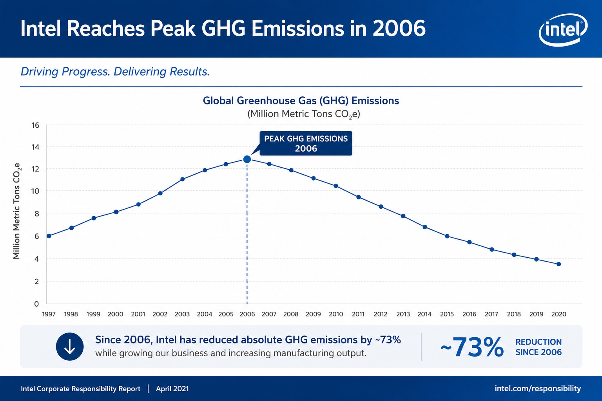
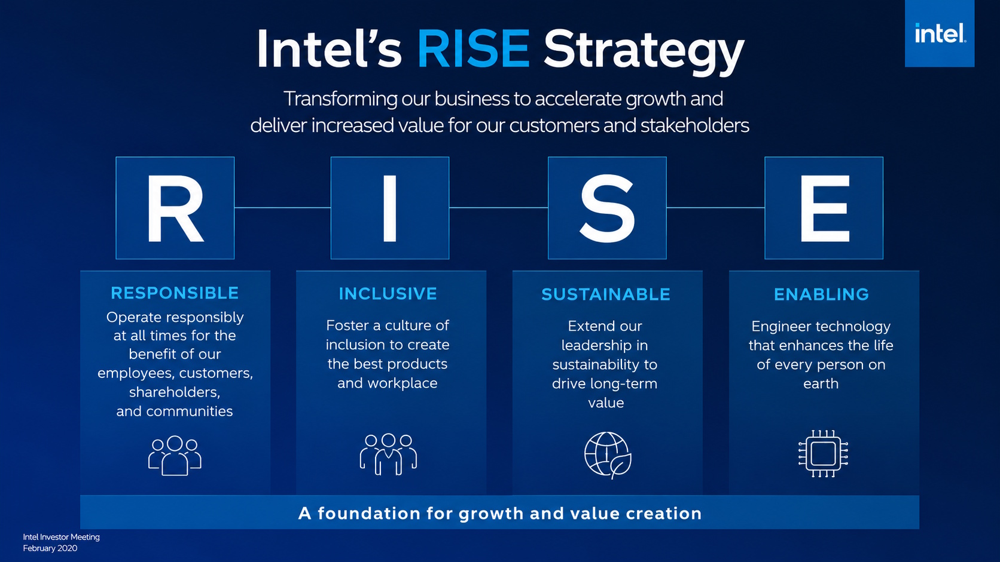
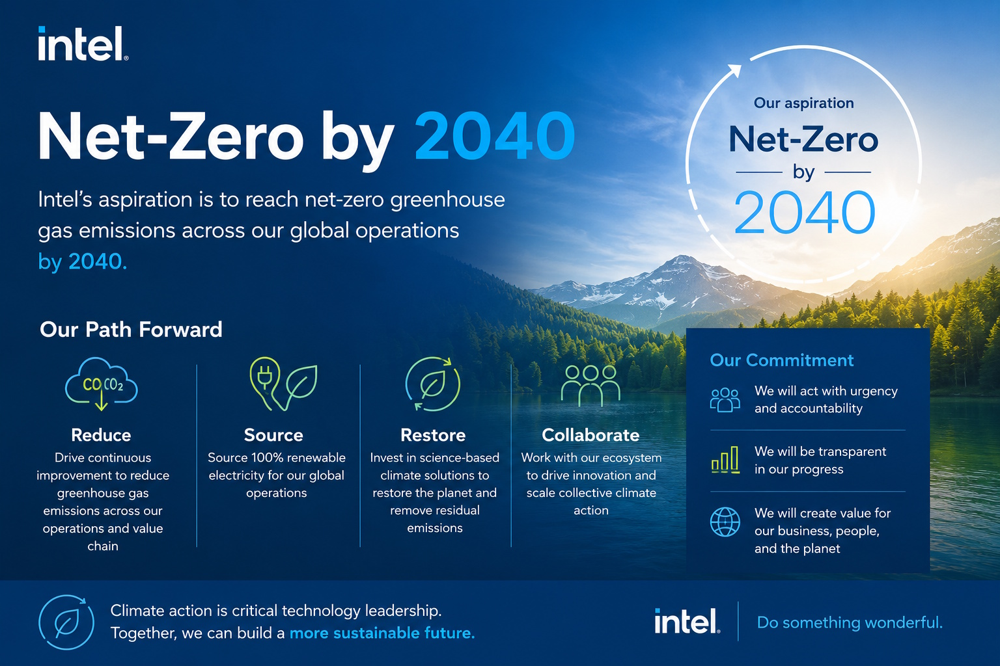
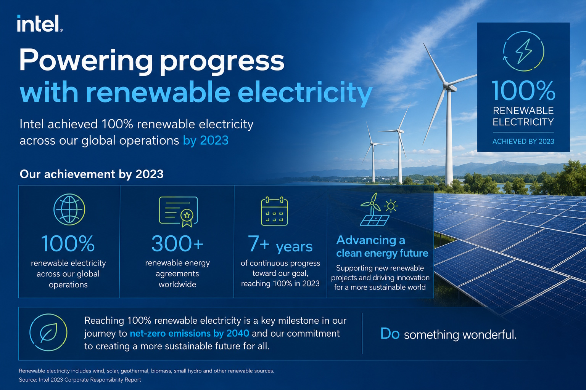
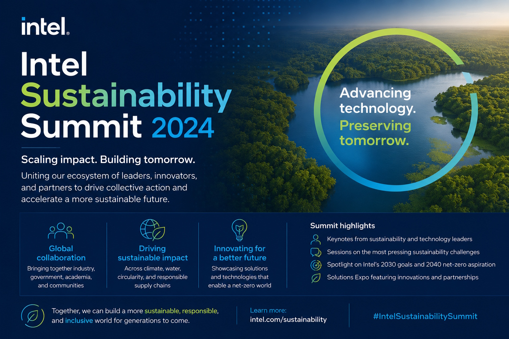

1968
Intel Founded

Robert Noyce and Gordon Moore rename the newly formed company NM Electronics to Intel Corporation, laying the foundation for decades of technological innovation.
1971
First Microprocessor

Intel debuts the 4004, the world's first commercial microprocessor, igniting the microprocessor revolution and propelling the future of computing devices.
1978
8086 Processor

Launch of the 8086 processor, establishing the x86 architecture that drives countless PCs and servers in the modern era.
1985
386 Processor

Intel introduces the 386 processor with 32-bit architecture, ushering in a new era of performance and multitasking for personal computers.
2006
Peak GHG Emissions

This year marks Intel's highest annual greenhouse gas emissions for operations. Over subsequent years, Intel invests heavily in chemical abatement, renewable energy, and energy-efficient manufacturing to reverse this trend.
2020
RISE Strategy

Intel launches its RISE (Responsible, Inclusive, Sustainable, Enabling) strategy and 2030 goals, aiming to drive industry-wide progress on climate action, water stewardship, and waste reduction.
2022
Net-Zero By 2040

Intel announces its commitment to achieve net-zero greenhouse gas emissions (Scope 1 and 2) across its global operations by 2040, building on years of environmental initiatives.
2023
Renewable Electricity

The company achieves 99% renewable electricity usage worldwide, helping to drastically lower carbon emissions and driving progress toward Intel's long-term sustainability goals.
2024
Sustainability Summit

Intel hosts its first Sustainability Summit, uniting suppliers, government officials, and industry leaders to collaborate on next-generation sustainable semiconductor manufacturing.
Postcard from Computex 2026: New Intel® Core™ Series 3 laptops for Everyday Creation and All-day Productivity
At Computex 2026, Intel unveiled its new Core Series 3 processor family (codenamed "Wildcat Lake"), which is explicitly designed to bring high efficiency and built-in AI to mainstream, thin-and-light laptops. Addressing the consumer demand for longer unplugged usage, these new chips offer up to 20 hours of battery life alongside integrated Neural Processing Units (NPUs) for local AI acceleration. The hardware rollout includes cutting-edge connectivity standards like Wi-Fi 7, Bluetooth 6, and Thunderbolt 4. While Intel showcased six initial laptop designs at the event, major PC manufacturers—including Acer, ASUS, Dell, HP, Lenovo, and功 MSI—are slated to bring more than 70 distinct Core Series 3 laptop designs to the consumer market in the following months.
Computex 2026: An Intelligent World Built on Silicon

At Computex 2026, Intel CEO Lip-Bu Tan highlighted the company’s vision for an AI-driven future centered around its advanced 18A manufacturing technology. Key announcements included the rollout of the Intel Core Ultra Series 3 and Arc G3 architectures for consumer PCs and handheld gaming, alongside the new Xeon 6+ processors built to handle heavy data center workloads. A major focus of the keynote was the rise of "agentic AI" (AI that can plan and act autonomously), which is driving a shift toward hybrid cloud-to-edge setups and massive rackscale infrastructure built in partnership with companies like Foxconn and Perplexity. Ultimately, Intel positioned itself as a foundational leader expanding raw silicon power into robotics, physical AI, and specialized industry solutions.
New Smart City Pilot Network to Bridge Digital Divide for 50 U.S. Cities
The article highlights Bellflower Connect, a new municipal wireless network in Bellflower, California, designed to bring affordable high-speed internet to communities suffering from cellular blind spots and high telecom costs. Developed through a public-private partnership with Tradewinds Networks and powered by Intel hardware, the system bypasses expensive, power-hungry cloud data centers by using edge computing (processing data locally right on the street corner). By utilizing a network of 80 solar-powered towers equipped with 4th Gen Intel Xeon processors, the initiative can provide free internet to low-income households and heavily discounted rates for local residents ($15/month) and businesses ($39/month). With plans already underway to expand this low-cost, self-sustaining model to 50 additional U.S. cities, the project serves as a scalable blueprint for bridging the digital divide nationwide.